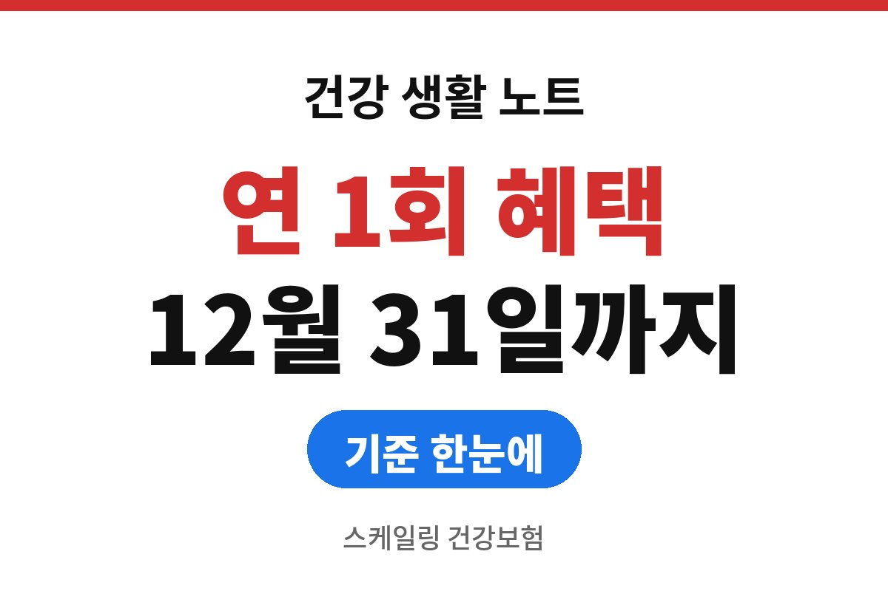
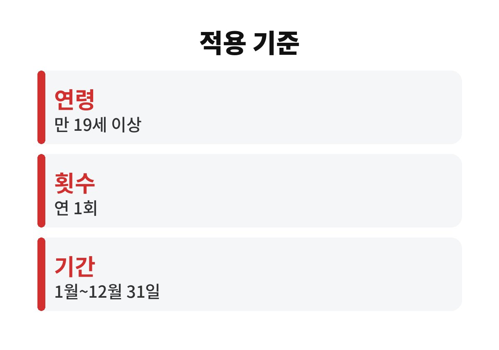
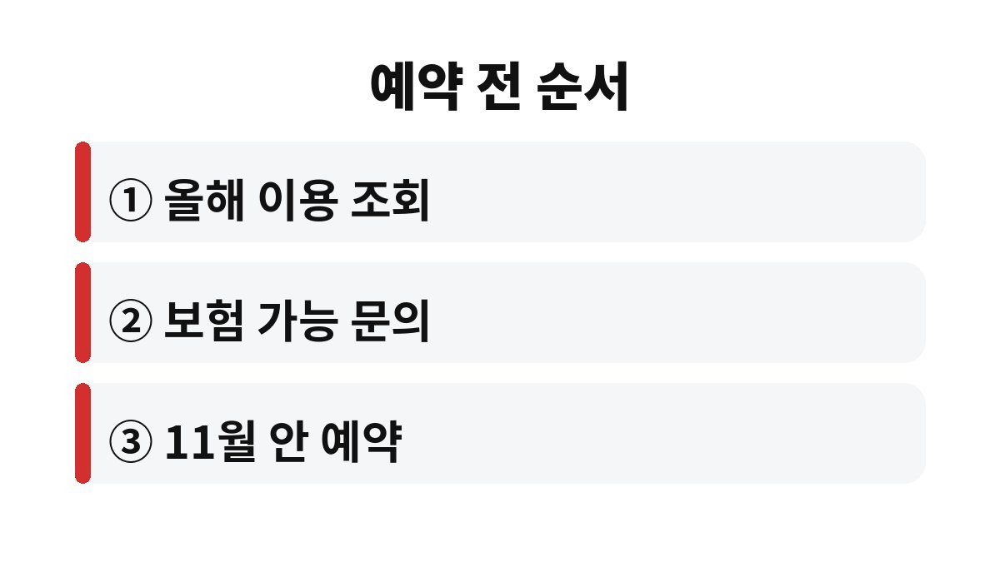

스케일링 건강보험 혜택은 만 19세 이상이면 1년에 한 번 적용되고, 그해 12월 31일을 넘기면 사라진다.
치석제거는 치과에서 가장 흔한 예방 진료인데도 올해 한 번도 받지 않고 연말을 넘기는 경우가 많다.
국민건강보험공단 안내를 기준으로 적용 조건과 예약 전에 확인할 것을 정리한다.
건강보험이 적용되는 치석제거는 연 1회다.
기준은 매년 1월 1일부터 12월 31일까지이며, 올해 받지 않았다고 내년에 두 번 받을 수 있는 것은 아니다.
이월이 되지 않아 12월이 되면 치과 예약이 몰리는 일도 흔하다.
| 확인 항목 | 공단 안내 기준 | 체크 포인트 |
|---|---|---|
| 대상 연령 | 만 19세 이상 | 생일이 아닌 만 나이로 본다 |
| 횟수 | 연 1회 | 같은 해 안에서 한 번 |
| 적용 기간 | 1월 1일~12월 31일 | 12월 말 소멸, 이월 없음 |
| 본인부담 | 의료기관 종류에 따라 다름 | 의원급은 비용 일부만 내는 구조 |

같은 해에 이미 받았는지는 건강보험 앱이나 공단 상담으로 확인할 수 있다.
이사나 직장 이동으로 치과를 바꿨다면 올해 받은 기록을 본인이 기억하지 못하는 경우도 있다.
예를 들어 직장 근처 치과에서 올해 초에 받았는데 연말에 집 앞 치과를 예약했다면 접수 단계에서 이미 소진된 혜택으로 안내받을 수 있다.
이런 경우 당황하지 않고 이용 내역부터 확인하면 된다.
이미 올해 받았다면 두 번째 치석제거는 비급여로 처리되어 비용이 크게 달라질 수 있다.
접수할 때 올해 받은 적이 있는지 말하고, 확실하지 않으면 공단에 조회를 요청한다.
치석제거만 보험이 적용되는 것이 아니라 잇몸 염증이 심하면 잇몸 치료가 추가로 필요하다는 진단이 나오기도 한다.
이때는 치석제거와 별개로 치료 계획과 비용을 따로 설명받고 결정한다.
스케일링 직후 잇몸이 붓거나 시린 느낌이 며칠 있을 수 있지만, 통증이 심하거나 출혈이 오래 멈추지 않으면 해당 치과에 다시 문의한다.

전화로 물을 때는 건강보험 적용 스케일링인지, 대기 시간은 얼마나 되는지를 함께 확인하면 헛걸음이 줄어든다.
연말에는 하루 예약이 일찍 차는 치과가 많아 한 주 이상 뒤로 밀리는 경우도 있다.
치석은 칫솔질로 닦이지 않는 곳에 남은 플라크가 굳어 생기고, 한번 굳으면 집에서 없앨 수 없다.
어금니 안쪽과 아랫니 앞쪽 안쪽 면은 침샘 입구가 가까워 특히 잘 쌓이는 자리로 알려져 있다.
연 1회가 모두에게 충분하다는 뜻은 아니며, 잇몸이 자주 붓거나 피가 나는 사람은 치과에서 더 짧은 간격을 안내받기도 한다.
반대로 치석이 거의 없는 사람이 보험 혜택을 채우려고 억지로 갈 필요도 없다.
치과마다 스케일링에 걸리는 시간과 마취 여부가 다르므로 예약 전화에서 소요 시간을 함께 물으면 점심시간이나 퇴근 뒤 일정을 잡기 쉽다.
치석제거 뒤 하루 이틀은 너무 뜨겁거나 차가운 음식에 시린 느낌이 날 수 있어, 큰 일정 직전보다는 여유 있는 날을 고르는 편이 낫다.
칫솔질은 평소보다 부드럽게 하되 쉬지 않고 이어가고, 치아 사이는 치실이나 치간칫솔로 닦는 습관이 치석 재발 속도에 영향을 준다.
스케일링은 아프기 전에 받는 진료라서 미루기 쉽지만, 보험 적용 시점이 해마다 끊긴다는 점이 달력에서 가장 먼저 확인할 이유다.
오늘 해야 할 일은 올해 받은 기록을 조회하는 것 하나다.
잇몸 출혈이나 입냄새가 계속되면 스케일링 시기와 상관없이 치과 전문의와 상담하길 바란다.
참고 자료: 국민건강보험공단 「치석제거(스케일링) 건강보험 적용 안내」(2026년 11월 확인)
※ 2026년 기준 공식 기준을 바탕으로 정리한 일반 건강 정보이며, 증상이 계속되거나 지병이 있다면 전문의와 상담하길 바란다.